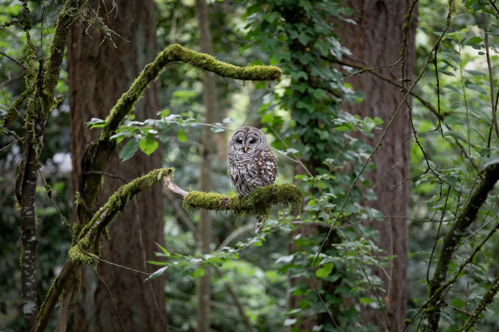
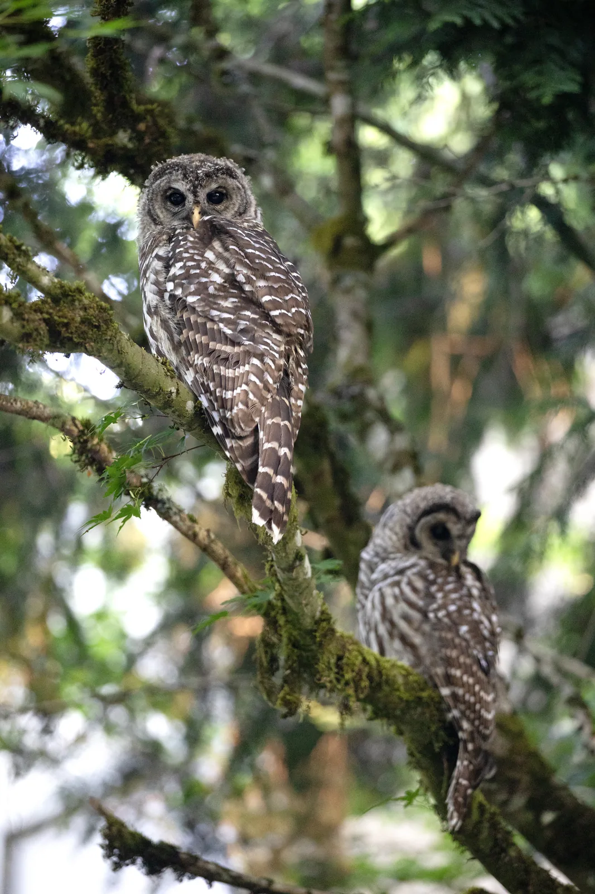
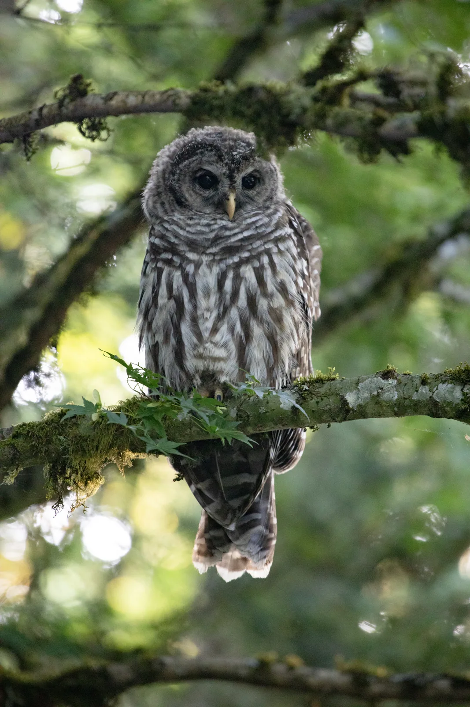
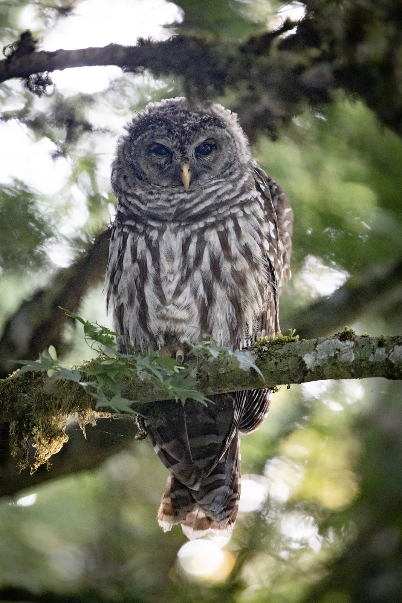
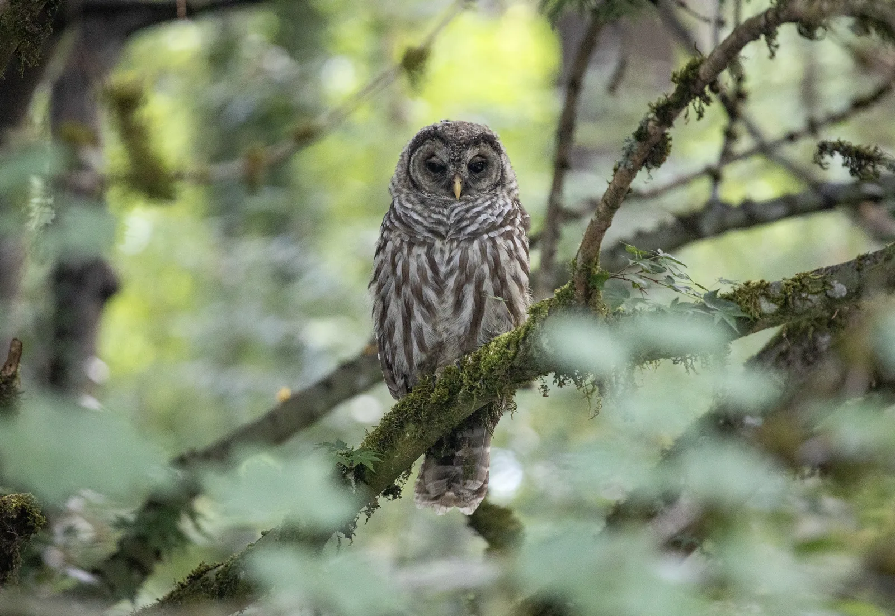
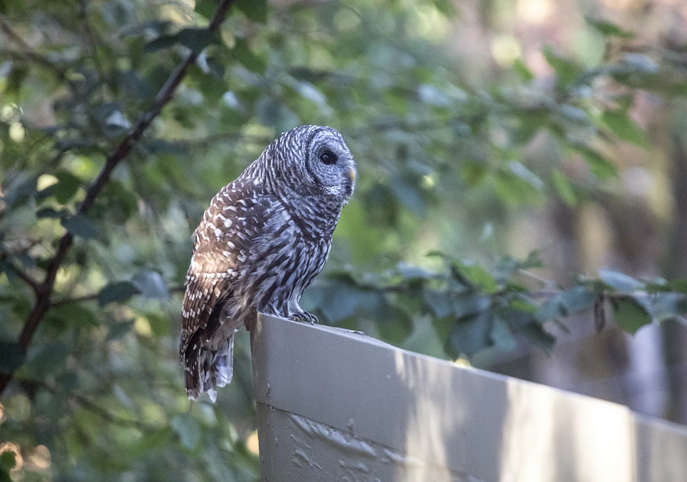

Barred Owls
For the past few years I’ve been photographing the barred owls that visit our yard in the spring and summer. They are loud at night, and their many different hoots and screeches often wake us up. Most of the time there are two, but on one special day there were four.
The owls seem like very social creatures. Some days they hardly seem to care that I’m photographing them, and other days a single footstep is enough to spook them.
I have yet to see any other owls in the area, and I suspect the barred owls might be chasing them off, but time will tell. The crows that recently moved into the area despise the owls, so I can usually tell they are around by all the squawking.
A lot of people, myself included, get barred owls confused with spotted owls, which are threatened. Barred owls are territorial and push spotted owls out of their habitat, so wildlife agencies are working to reduce barred owl numbers in hopes that the spotted owl can recover. Even so, I hope these visitors keep coming back in the years ahead.
From the Yard
Spring and summer sightings in Oregon.




